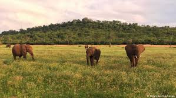
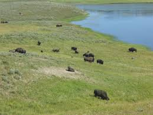
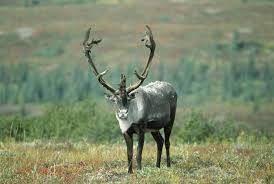

COMP213 - Web Interface Design - Fall 2019
Student Name: Yui Man Jonathan Lee - Student Number: 300978432
Protected Areas Issues
The nature of our world is beautiful, it is the source of life to rare species of animals. As time passes, the number of habitats for animals has been reducing by a landslide, and only protected areas remain to provide a habitat for those animals. However, even the protected areas are facing grave danger.
Links
Here are some links for your information about Protected Areas
-



- What are protected Areas?
- Current situation of the current protected areas
- Challenges protected areas face.
- WWF's take on problems with our protected areas
- WWF's take on how they are protecting protected areas.
- detailed analysis on about protected areas, importance, and strategies.